前言
這篇是小弟我自己的學習筆記，內容不會針對 iOS 開發的特定主題進行介紹，
內容主要是看了 Developing iOS 8 Apps with Swift by Stanford 這個
課程的心得與感想，因為這塊尚在學習中，所以內容可能會有錯誤，也請大家包涵。
另外，這邊紀錄的主要是針對小弟我自己比較不熟悉的部分，所以大家
不要把這文章當作一個正式的學習過程喔！！還是建議看完整的影片學習，或是直接閱讀外面的課本、上課、或是官方的文件喔！！
最後，這篇文章會隨著小弟自己的學習過程中，不斷的更新，但更新的過程中，並不會特別 Highlight ，也請大家多見諒。
開始
是一篇，我們建立了一個僅有數字顯示的計算機功能，而 Lession 2 將會繼續下去。而在這次的影片中，白鬍子老師也提到，
原來他想寫的是科學計算機啊！！ ( 不是我們一般的計算機… )，總之，就是那種可以一次按多個數字，然後一次全部相加的那種計算機就是了～～
建立 Return 按鈕
前面，我們建立了九宮格的數字，接下來，我們要建立一個 Return ( Enter ) 按鈕，按下這個按鈕，就會將數字不斷地記錄到計算機的記憶體。
所以我們就複製一個新的按鈕。
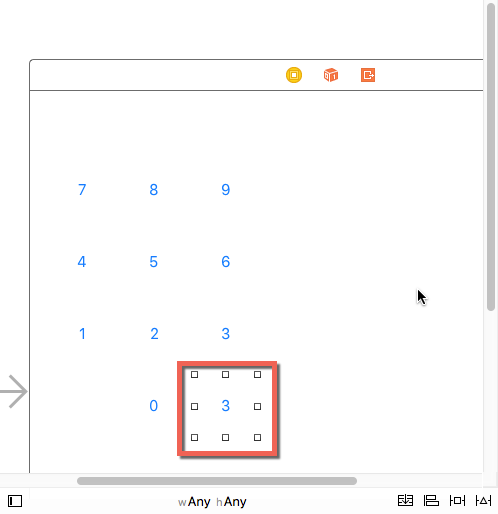
而這邊，要注意的是，透過複製的方式，其會這個 Return 的按鈕事件，會和九宮格的按鈕事件一樣，我們透過右邊視窗的小點點，就可以發現，
全部按鈕都被繫結至同一個按鈕。
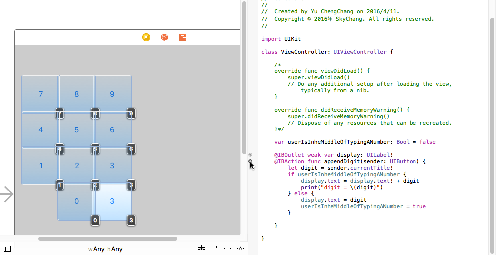
所以記得要先移除事件，如下圖，按下叉叉就可以。
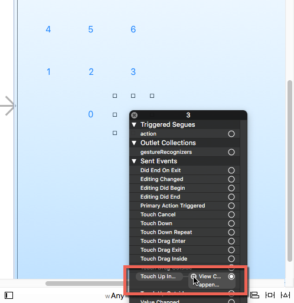
接下來，我們要顯示 Return 這個按鈕的圖示，而 Xcode 竟然有內建這種 icon 的功能！！酷！！我們只要選擇下圖的選項。
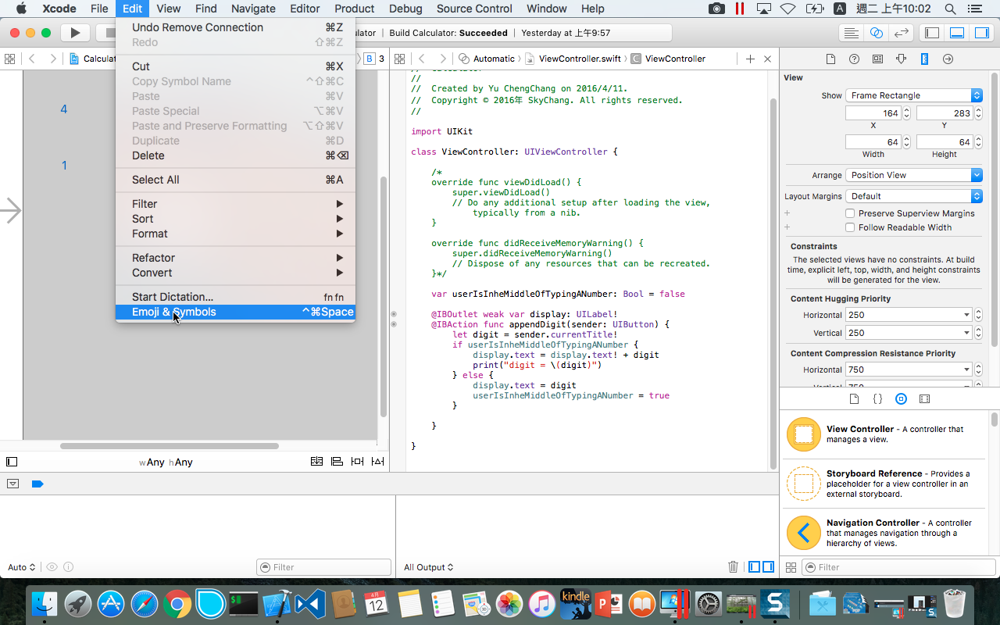
一開始出來的是簡略的圖案，我們可以按下右上的按鈕展開詳細的清單，然後我們可以用 Search 尋找 Return 的 icon。
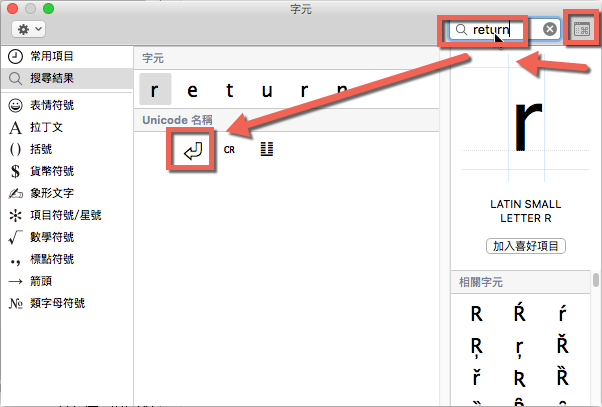
接著，我們一樣把 Return 的按鈕拉到 Code，而這邊我們就可以不用帶參數了。
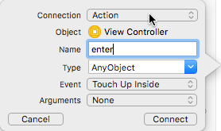
完成的 code 會變成這樣，enter 就沒有參數了。
1 | func enter() { |
接下來，我們針對裡面的程式碼進行撰寫，這邊按下 enter 後，希望把輸入的數字存到記憶體裡面，所以我們這邊就用 Array 進行儲存。
所以我們要先準備一個 Array。
1 | var operandStack: Array<Double> = Array<Double>() |
是的，在 Swift 裡面，不需要多寫 new ( 其實我覺得這點還不錯~~ )，後面直接撰寫類別名稱就可以了。
另外，還不是最簡潔的， Swift 甚至連變數的型態都可以不用去寫，就像 C# 一樣，透過編譯去處理，編譯器會得知你這個變數的型態。
所以可以寫成這樣。
1 | var operandStack = Array<Double>() |
就這樣，變得更簡單了！！
有了 array 後，我們就可以開始將 dobule 加到 array 裡面。我們可以用 append 方法，將數字加入進去.
而因為 display.text! 字串，所以我們可以使用 NSNumberFormatter().numberFromString() 來轉型，
而 NSNumberFormatter().numberFromString() 會回傳一個 NSNumber? ，所以我們要加上 ! 來取得 NSNumber。
但是，NSNumber 畢竟還不是一個 double，他定義了一套方法來專門設置和訪問
signed、unsigned char、short int、int、long int, long long int、float、double、BOOL。
所以還要透過 dobuleValue 屬性來取得 double。
1 | func enter() { |
基本上上面這樣就可以了，但是感覺還是不美好，畢竟直接去操控了 display.text。 ( 謎之聲，但前面的 Code 都是直接操啊！！ )
好吧，畢竟前面白鬍子沒提到，但既然提到了，我們就稍微處理一下。
我們希望透過一個變數，類似使用 MVVM 的方式，透過這個變數，來控制與存取 display.text ，換言之，只要我取得這個變數，
就等同我取得 display.text，當我存放這個變數，就等於我設定 display.text。
那要怎麼做勒！？
我們可以定義一個變數，並且使用 get 和 set ( 這點倒是和 C# 一樣 )，就可以達到效果 ( 未來有沒有 bind 機制，我還不知道… )
那比較需要注意的是 newValue ，其實這就是代表著傳遞，或是變數自己本身。
1 | var displayValue: Double{ |
所以到這邊為止，我們就可以改變程式碼，變成這樣，Lession 1 寫的 Code 就不變了，因為白鬍子也沒改，
為了上內容一致，小弟我就不自己動手改變了。
1 | //var operandStack: Array<Double> = Array<Double>() |
最後結果，就如同下圖，我們可以重偵錯視窗看到 operandStack 這個 array。
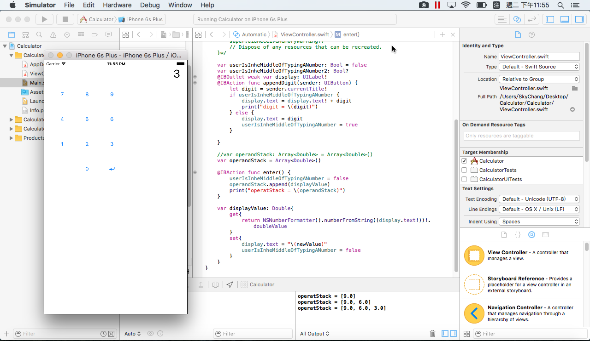
建立加減乘除( 使用委派與閉包 )
完成了 Enter 後，接下來我們要來建立加減乘除的按鈕，首先，我們一樣複製一個 Button 當作 * ，別且移除事件。
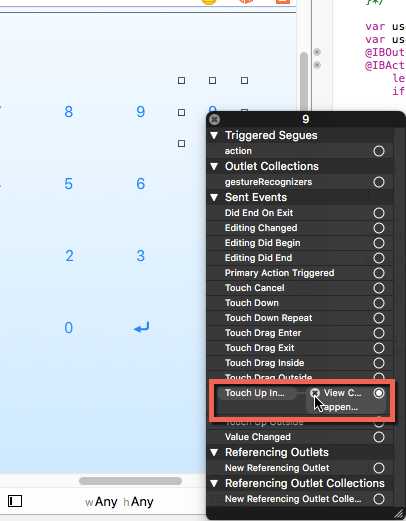
接下，我們一樣拖拉出來一個事件，並且選擇如下圖，這次我們就需要有參數了。
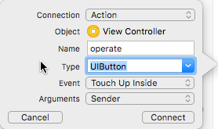
完成後，我們就開始建構 func 裡面的方法，首先，我們一樣要透過 sender.currentTitle! 來取得按鈕的 Title，接著，
我們就用 switch 來判斷 operation 是加減乘除，基本上，大家對於 switch 應該是還滿熟悉的，而比較特別的是，
每個 case 裡面不用再加上 break ( 這的確很方便 )
1 | func operate(sender: UIButton) { |
有了 switch 後，我們就可以寫第一個乘法。這邊我們就用 Count 來判斷是否陣列已經超過兩個數字了，有兩個數字才能做乘法的動作。
而這邊，我們就用之前寫的 displayValue 來接受計算，而第一個數字，就擷取 array 的最後一個數字去乘倒數第二個數字，
所以我們可以用 removeLast 取得最後一個數字。
題外話，後面加上 enter() 是為了讓運算完的答案，存到 array 裡面繼續做運算。
1 | func operate(sender: UIButton) { |
當然，如果除、加、減都這樣搞，Code 的感覺當然很醜，既然身為設計師，怎麼可以容納這樣的寫法呢！
所以第一步的優化，我們就先把邏輯抽出來！
所以我們可以寫一個 func 來把原本的乘法邏輯抽出來，而 Swift 的回傳寫法，就是在後面加上 -> 型別
1 | func operate(sender: UIButton) { |
感覺上這樣稍微好一點！！？ 才怪，大家會發現，其實我們還是要建立四個方法才能符合加減乘除啊！！
那有沒有比較好的方法勒？？ 大家不知道有沒有發現，改變的地方在哪裡？？沒錯，就只有某某數字加上某某數字，或是某某數字乘上某某數字，
簡單的說，只有運算的地方需要改變。
是低，我們可以用傳遞方法，委派的方式！！
如下的 Code ，現在方法改成 func preformOperation(operation: (Double,Double )-> Double ) 也就是說，
這個 preformOperation 方法的參數 operation 就是另外一個方法，而 operation 這個方法，必須符合 (Double,Double )-> Double 。
( 關於委派，小弟就不再這邊闡述太多了…. )
所以我們可以另外定義一個符合 (Double,Double )-> Double 的方法 multplay ， 以利把 multplay 當作參數傳入到 operation 裡面。
所以完成的 Code 就會如下，很標準的委派作法~~
1 | func operate(sender: UIButton) { |
好吧，看起來比剛剛稍微好一點，但實際上，我們還是要定義四個方法來代表加減乘除，並當作參數傳遞至 preformOperation 裡面啊！！！
既然 Swift 是那麼新的語言，怎麼可能沒辦法簡化，所以我們可以改成如下。
1 | func operate(sender: UIButton) { |
是低！！大家有沒有覺得這段 Code 很熟悉的感覺，這不就是早期 C# 委派的匿名方法的寫法嗎！！
換句話說，我們就可以不用定義 multplay 了，可以直接把 func 寫在 preformOperation 裡面當作參數直接傳遞
，只要使用 {} 包起來 ( 閉包，這和 JS 很像 )，並且用 in 代表裡面的邏輯。
1 | case "×":preformOperation({(op1:Double ,op2:Double) -> Double in |
好，當然 C# 都可以持續進化了，Swift 也可以持續改進。我們更可以精簡成底下這樣，如同 C# ㄧ樣，
Swift 也可以透過編譯器自動幫忙知道 op1 , op2 的型別。
( 因為已經在 preformOperation 裡面定義要傳入的參數型別了，所以編譯器當然能判斷 )
1 | case "×":preformOperation({(op1 ,op2 ) in |
如果是 C# , 下一步就是進化成 Lambda 了，而 Swift 當然也可以進化.. 如同 Lambda ，如果只有一行，也可以把 return 省略…
1 | case "×":preformOperation({(op1 ,op2 ) in op1 * op2}) |
到這邊就結束了嗎!!? Swift 更噁心…喔，不是，是更聰明，Swift 可以用 $0 , $1 等等，代表參數的順序，這代表什麼！？
連 (op1,op2) 都可以省了…所以，就變成底下這樣 …..
1 | case "×":preformOperation({ $0 * $1 }) |
好，大家以為這樣就結束了，錯，還可以再進化！！ 抖抖 .. 如果 preformOperation 裡面的 func 參數 (也就是 operation: (Double,Double )-> Double) 是最後一個參數，
我們還可以把 {} 的內容，拉到 () 後面，變成這樣….
1 | case "×":preformOperation(){ $0 * $1 } |
這就是神奇的 Swift … 基本，這樣講下來，也把整個 C# 的 Lambda 歷史解釋了一次！！(疑！？）所以可見目前大宗的語言，
都是英雄所見略同啊！！
所以最終的 Code 會變成這樣。
喔，小提醒，這邊我們多加了 if userIsInheMiddleOfTypingANumber 這個判斷，
主要是針對當使用者發生 數字 -> return -> 數字 -> 運算 這種情況下，我們也會把第二次的數字，enter 進 array 裡面，
如果沒有這一行，那每次使用者都要 數字 -> return -> 數字 -> retuen 後，才能按下運算按鈕了….
1 | func operate(sender: UIButton) { |
overloading
接下來，我們多拉一排按鈕如下。
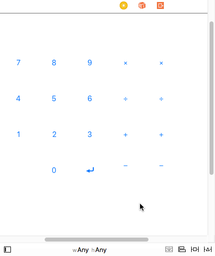
接著，把上面按鈕的 Title 都拿掉 ( 不是刪除 Button )，我們只留下最後一個，用來準備開根號。
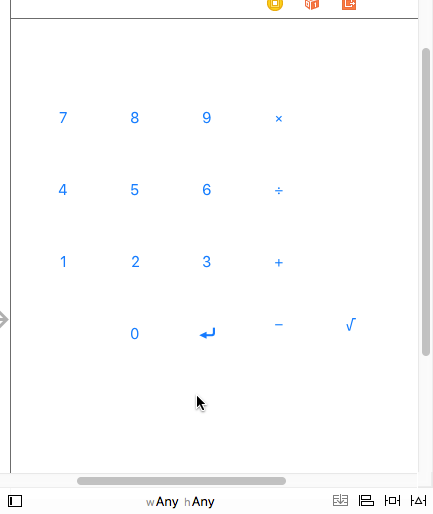
完成後，我們可以增加以下程式碼。並且特別注意，如果照著影片教學的內容，是會發生錯誤的。這是因為 Swift 1.2 做了些改變。
其一是因為 Objective-C 原本就沒有 Overloading ，或者對 Objective-C 來說，根本就沒有 func 這等事，
( Objective-C 使用簽名的概念，並用 @Selector(preformOperation) 做選擇 )
而在 1.2 為了和 Objective-C 有更好的相容，所以會嚴謹的模式，檢查基於 @objc 方法的重載，
也因此，只要是與 Objective-C 有關，就會有這個問題…
問題是，這邊和 Objective-C 有啥關係，我又沒寫!?….
那是因為繼承，我們實際上繼承了 UIViewController 而這個是繼承自 NSObject ，而這就是用 Objective-C 寫的…
所以一種官方解法
是前面加上 private ，透過 private 關鍵字，來關閉 @objc 的推斷，就不會編譯成 Objective-C。
1 | func operate(sender: UIButton) { |
如果真的還是要編譯成 Objective-C ，那就可以在後面加上參數名稱，如前面所說，Objective-C 只要參數名稱不同，
就會認定是不同的 func .
1 | private func preformOperation(operation: (Double,Double )-> param:Double ){ |
後記
待續…
參考資料
- Developing iOS 8 Apps with Swift by Stanford
- http://stackoverflow.com/questions/29457720/compiler-error-method-with-objective-c-selector-conflicts-with-previous-declara/29670644#29670644
- http://mingda.net/2015/06/19/method-conflicts-with-previous-declaration-with-the-same-objective-c-selector/
- http://www.cocoachina.com/bbs/3g/read.php?tid=295786